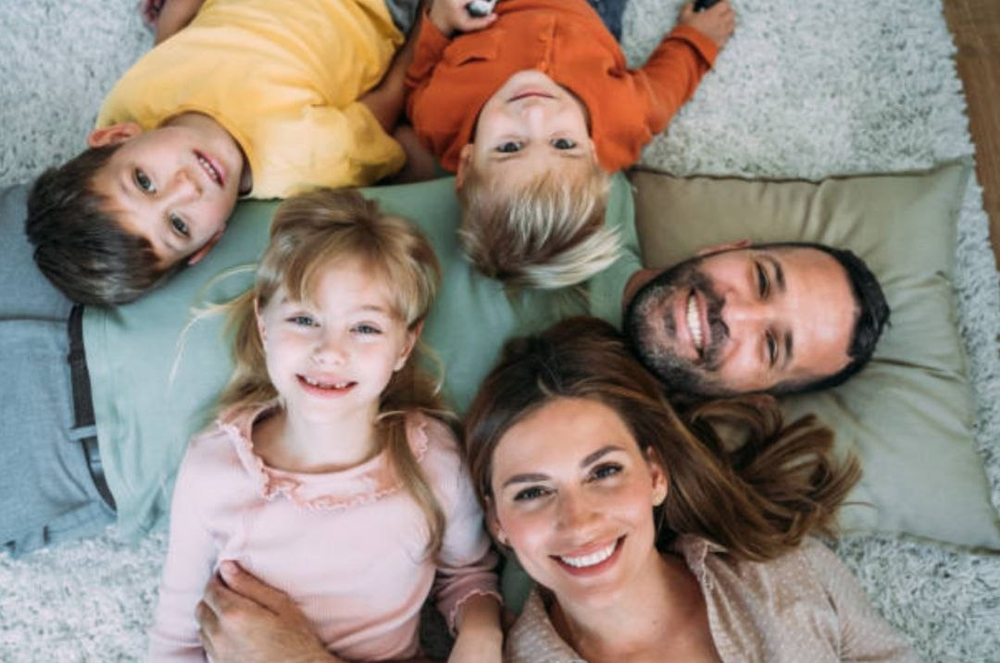
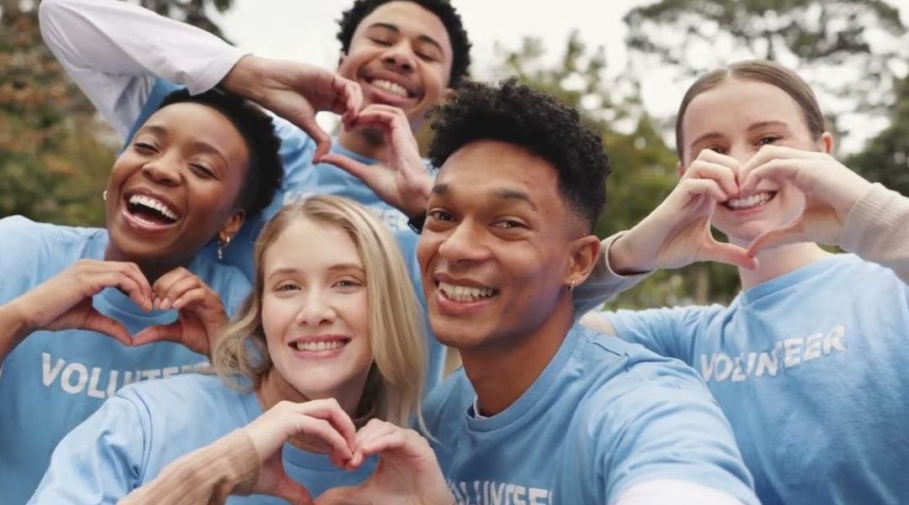
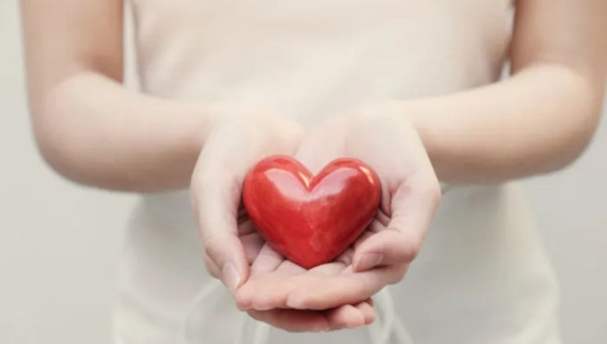

SAFE
FUTURE
Bun venit!
Proiectul realizat de către echipa “KindnessTeam” sprijină familiile vulnerabile și persoanele aflate în dificultate prin voluntariat, empatie și ajutor social, contribuind la o comunitate mai solidară și mai sigură.


Proiectul realizat de către echipa “KindnessTeam” sprijină familiile vulnerabile și persoanele aflate în dificultate prin voluntariat, empatie și ajutor social, contribuind la o comunitate mai solidară și mai sigură.

Noi, echipa KindnessTeam, am oferit ajutor familiilor aflate în dificultate, prin donații și activități caritabile. Cu sprijinul oamenilor implicați, acestea au reușit să cumpere alimente, haine, rechizite și medicamente, dar și să achite unele cheltuieli importante. Prin aceste acțiuni, am încercat să aducem mai mult sprijin, speranță și siguranță familiilor care aveau nevoie de ajutor.

Voluntarii organizează activități interactive și educative pentru copiii cu dizabilități, precum jocuri, ateliere creative și momente de socializare. Prin aceste activități, copiii își dezvoltă abilitățile de comunicare, creativitatea și încrederea în sine. În același timp, ei au ocazia să petreacă timp într-un mediu prietenos, unde se simt acceptați și susținuți de comunitate.

Pe blog sunt publicate informații utile pentru părinți și familiile vulnerabile, inclusiv ghiduri despre centre de suport, terapii și posibilități de ajutor. De asemenea, sunt prezentate modalități prin care oamenii pot dona sau se pot implica în activități de voluntariat. Scopul este de a oferi sprijin, încurajare și acces mai ușor la resurse importante pentru cei aflați în dificultate.
Fiecare gest contează. O comunitate mai bună nu se construiește de la sine, ci prin implicarea fiecăruia dintre noi. Atunci când ne unim forțele, micile acțiuni zilnice devin sprijin real pentru cei din jur. Fie că alegi să oferi ajutor, fie că ai curajul să îl soliciți, implică-te alături de noi! Schimbarea începe cu tine.